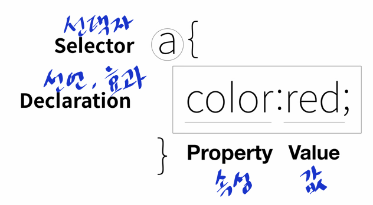

- 이제부터는 CSS코드에 대해 공부를 할 것이다. CSS코드는 우리가 알고있는 HTML코드에
추가로 CSS라는 언어의 태그를 사용함으로써 만들어지는 것이다.
- CSS 태그를 추가하는 것 보다 훨씬 더 어렵지만 근본적인 해결책이다.
- CSS를 사용함으로써 가장 큰 장점은 "중복의 제거"라는 것이다.
-웹 브라우저에게 CSS인지 알 수 있게 하는 방법에는 두가지가 있는데,
하나는 style태그 사용, 다른 하나는 속성을 활용하는 것이다.
- 우리는 CSS를 사용하기 위해서는 웹브라우저에게 "지금부터 CSS코드를 사용할 것이니 html이
아니라, CSS의 문법에 따라 해석해야해"라고 html의 문법으로 말을 해줘야 한다.
- 즉, CSS의 문법을 해석하라는 이 html 문법은 (style)(/style) 이다.
- Style이라는 태그를 쓰면, 이는 html의 문법인 동시에 웹브라우저에게
이 style 태그 안쪽에 있는 내용은 CSS니까, CSS라는 언어의 문법에 맞게 해석해서
처리 해야 해 라는 의미를 담고 있다.
- HTML의 태그 기능을 수백,수천,수만번 할 것을 CSS는 단 하나의 언어로 할 수 있게끔 한다.
- CSS에서 제일 중요한 것은, 내가 디자인 효과를 주고 싶은 언어를 지정
하여 그 언어와 연관된 모든 것에 변화를 줄 수 있는 것이다.
- For example
(style)a {color:red;}(/style)
위의 코드는 = [링크를 의미하는 'a'라는 태그가 있는 모든 글자를 빨간색으로
변경하고 싶을 때] 사용하는 CSS언어인 것이다.
- 즉, CSS언어를 사용할 때는 무조건 style이라는 태그를 사용한 다음,
그 태그 안에서 자신이 원하는 포지션 설정과 그 포지션의 변화를 요구하는
CSS 언어를 사용하는 것이다.
- CSS 언어에서 살펴볼 점은 요구하고 싶은 CSS언어를 {}
이러한 중괄호안에 포함시킨다는 점과,
그 언어를 끝맺을때는 ;
세미콜론을 붙여주고 끝낸다는 점이다.
- 즉, CSS코드란, (style) (/style) 태그 안에 원하는 영역을 지정하고 {} 중괄호를 사용
하여 마지막에는 ; 세미콜론으로 마무리 짓는 것을 알 수 있다.
- 여기서 중괄호 a {}는 우리가 주고싶은 효과를 누구에게 줄 것인가를 선택한다는 점에서
선택자, selector라고 부른다.
- 중괄호 안에 있는 것,즉 Selctor에게 지정될 효과를 효과,
Declaration(선언)이라고 부른다.
- ; 세미콜론은 하나의 효과(declaration)이 시작되고 끝나는 것을 구분해주는 역할
을 한다.
- 아래 참조 사진을 보면 조금 더 확실히 CSS의 개념에 대해 이해할 수 있을 것이다.

- Style이라는 속성을 사용하면, 그 속성의 값을 웹 브라우저는
CSS의 문법에 따라 해석하고, 그 결과를 Style속성이 위치하고 있는 태그에게 적용한다.
- 속성을 사용하는 경우에는, 특정 대상에게만 효과를 주는 것이기 때문에
선택자(selector)인
중괄호가 필요 없으며, 단순히 Style="" 이라는 속성만 부여하면된다.
그렇게 하면 특정 대상에게만 효과 변경을 할 수 있는 것이다.
- 다만, CSS언어를 속성을 활용하여 사용한다면 중괄호만 사용할 필요가 없다는 것이지
다른 효과를 주기 위해 CSS언어를 사용한면 그 효과를 구분하기 위하여
; 세미클론은 사용해 주어야 한다.
- 웹페이지에 있는 하나의 태그에 대해 모든 내용을 바꾸고 싶다면, Style 태그를
사용하여 하나의 html 태그를 정해주고 그 다음 효과를 주면 된다.
예를 들면, 링크라는 태그 a가 가지고 있는 모든 내용에 효과를 주기 위해 한꺼번에
수정을 하고 싶다면
a {속성:값;} 이렇게 해주면 된다.
만약, 제목이라는 태그 h1이 가지고 있는 그 아래의 모든 내용에 효과를 한꺼번에 주고싶다면
h1 {속성:값;} 식으로 만들어주면 되는 것이다.
- 우리는 CSS를 이용하여 웹페이지를 디자인 할 것이다.
- 그러기 위해서는 인터넷 검색엔진에 기본적으로 들어가야 하는 검색어는 ' CSS '이다.
- 그 다음 검색어로는 우리가 어떤 것에 효과를 주고 싶은지 정한것이 들어가야 한다.
- 예를 들어, 글씨의 크기에 효과를 주고싶다면 Text Size 가 들어가야 한다.
- 마지막으로 우리는 그 효과를 가져다 줄 수 있는 ' 속성 '에 대해
알고싶기에, ' 속성 '을 뜻하는 Property가 들어가야 하는 것이다.
- 즉, 우리가 글자의 크기를 조절할 수 있는 CSS언어를 찾고 싶다면,
검색엔진에 'CSS Text Size Property' 라고 검색해야 한다.
- 태그가 중복되는 현상을 막기 위해서는 Grouping이 필요하다.
- Html의 속성 [Class=""]
- 정해진 약속에 따라 속성의 값을 [(style) .값 { 효과 } (/style)]
로 작성해야 한다.
- 예를 들어서, 지금까지 보았던 페이지들의 색상을 회색으로 설정하고 싶다면
각 태그 내에 in line으로 style 속성을 추가하는 것보다 Html의 속성인 Class="saw"를 넣어주는 것이다.
그리고 나서 CSS의 Style태그를 사용하여
(style) .saw {gray;} (/style) 이라고 적어주면
class="saw"라는 html 태그를 가진 모든 속성이 회색으로 변하는 것이다.
- 여기서 알 수 있는 것은 style 태그 내에서 단순히 class값 saw에 대하여
(style)saw{gray;}(/style)라고 적어주는 것이 아니라
(style).saw{gray;}(/style)이라고 적는 것이다.
- 그렇다면 class 값 saw에 대하여 맨 앞에 .이 붙는다는 것이다.,
Class라는 것은 같이 묶여지는grouping하다, 묶는다는 의미가 포함되어 있는데,
이 Class가 가지고 있는 값에 대하여 CSS인 Style 태그 내에서는
무조건 값 앞에 .을 붙여야 하는 것이다.
- 위에서 설명한 Class에는 단순히 값이 하나만 있는 것이 아니라 여러개를 넣을 수 있다.
그리고 마찬가지로 다른 값들도 style태그 내에 적용하기 위해서는 맨 앞에 .을 붙여야 한다.
- 예를 들어서 지금까지 보았던 페이지를 회색으로 설정하기 위해 어떠한 태그 내의 속성으로 class.saw
라고 정해줬고
Style 태그 내에 (style).saw{color:gray;}(/style)라고 표시를 했다.
- 만약, 현재 보고 있는 페이지를 빨간색으로 표시하고, 밑줄을 긋고 싶다면 어떠한 태그 내에 class.saw active
라고 표시를 한 후
Style태그 내에서는 (style).active{color:red; text-decoration: underline;}(/style)
라고 표시를 해주면 되는 것이다.
- 즉, 위의 내용을 토대로 우리가 알 수 있는 점은
- Style 태그 내에서 Class 선택자와 Tag 선택자가 붙으면 Class선택자가 이긴다
- Class 속성의 값으로는 여러가지가 올 수 있으며 띄어쓰기로 구분한다는 것
- Style태그 내에는 Class라는 속성은 들어가지 않는다는 것
- Style태그 내에는 그 속성의 값을 모두 적을 필요 없이, 필요한 값만 적으면 된다는 것
- Class 속성의 값을 style태그 내에 적을 때는 무조건 앞에 .을 붙인다는 것이다.
- 반면 Class 속성은 순서의 영향을 받으며, 보다 가까이에 있는 값의 영향이 더 크다.
- 그렇기 때문에 Class 속성을 사용하는 것은 순서를 맞춰야하는 부담감 때문에 어려운 경우가 있다.
그래서 등장하는 더 쉬운 방법은 'id 선택자' 이다.
- Class 선택자(속성)가 style 태그 내에서 순서에 맞춰야 한다는 부담감을 덜어줄 수 있는
선택자가 바로 id 선택자(속성)이다.
- id 선택자(속성)를 적는 방법은 id="" 이다.
만약, 어떠한 태그 내에서 id 선택자(속성)가 class 선택자(속성)보다 뒤에 오더라도
Style 태그 내에서 id 선택자(속성)를 class 선택자(속성) 보다 앞에 두게 된다면
id 선택자(속성)가 먼저 효과를 받게 되는 것이다.
- id 선택자는 일반 html태그 내에서의 필기법과 Style 태그 내에서의 필기법이 다르다.
- a. 일반 html 태그 내의 id 선택자(속성) 표기법 = id="값"
- b. style 태그 내의 id 선택자(속성) 표기법 = (style)#값{효과;}(/style)
위에 처럼 표기되는 것이다.
- 그럼 예를 한번 들어보겠다.
어떠한 태그내의 id 선택자(속성)의 값을 id="active" 라고 정해놓고
빨간색으로 색을 변경하고 싶다면
Style 태그 내에서는 #active {color:red;}이라고 입력해야하는 것이다.
- 즉, id 선택자(속성)의 어떠한 값이든 Style태그 내에서는 무조건 맨 앞에 #을 붙여줘야 하는 것이다.
- id 선택자와 class 선택자가 붙으면 id 선택자가 이긴다.
- Style 태그 내에서 강한 순서로 본다면
Id 선택자 > Class 선택자 > Tag 선택자 순이다.
- Id 선택자가 강한 이유는, Id의 값은 중복되면 안되고 단 한번만 등장해야하기 떄문이다.
- 예를 들어 id 값으로 id="active"를 한번 사용했다면 같은 문서(웹페이지) 안의
다른 곳에서는 더 이상 같은 active 값이 나오면 안되는 것이다.
- 그렇기 때문에 선택자의 값을 단 한번밖에 사용하지 못하는 id태그보다
tag선택자가 훨씬 더 포괄적인 것이며 id선택자가 훨씬 더 구체적이기 때문에
id 선택자가 우선순위가 높은 것이다.
- 검색엔진에 검색어로 'CSS Selector'라고 검색하면 되고 아래의 주소를 참조해도 된다.
- CSS Selector 종류
- 박스모델을 만들기 위한 CSS의 코드는 (style)border:값;(/style)로 시작하며
border뒤에 여러 효과를 부여할 수 있다.
- 예를 들어
a. 테두리의 두께를 정하기 위해 -> border-width: 원하는 px;
b. 테두리의 색깔을 정하기 위해 -> border-color: 원하는 색;
c. 테두리의 스타일을 정하기 위해 -> border-style: 원하는 선 종류;
d. 박스 내의 여백을 주고싶을 때 -> padding: 원하는 px;
e. 박스들의 테두리와 테두리 사이의 간격을 줄 때 -> margin: 원하는 px;
f. 화면 전체를 쓰는 block level element의 특징을 바꾸고 싶을 때
-> width: 원하는px;
= 이렇게 하면 tag (element) 공간의 크기가 바뀌게 되는 것이다.
-> height: 원하는px;
= 이렇게 하면 tag (element) 공간의 높이가 바뀌게 된다.
- 우선 위의 개념을 설명하기 전에, CSS에서 사용할 수 있는 주석에 대해 짚고 넘어가자
HTML에서는 주석으로
(!--
--)
이런식으로 사용되는 것을 우리는 알고 있다. 하지만, CSS에서는 주석으로
/* 내용 */
이렇게 사용되니 참고하면 좋다.
- 본격적으로 block level elemet와 inline element에 대해 설명하겠다.
- block level element : 화면 전체를 쓰는 태그를 일컫는 말(Ex : h1~h6태그 등등)
- inline element : 자기 자신의 부피만큼을 갖는 태그(Ex : a태그 등등)
- 하지만 block level element라고 하더라도 inline element처럼
display.inline;의 속성을 이용하여 자신의 부피만큼을 쓰게 할 수 있다.
- inline element도 마찬가지로 display.block;의 속성을 이용하면
화면 전체를 사용하는 block level elemet가 된다.
- 두 가지 선택자에게 똑같은 효과와 값을 준다면 따로따로 코드를 적어줄 필요가 없다.
- 예를 들어 아래 두가지 CSS를 보면
h1{border-width:5px; border-color:red; border-style:solid;}
a{border-width:5px; border-color:red; border-style:solid;}
효과와 값은 동일하지만 선택자는 다른 것을 볼 수 있다.
이런 중복을 지우기 위해 아래와 같이
h1, a {border-width:5px; border-color:red; border-style:solid;}
동일한 효과와 값을 가지고 있을 때는 선택자들을 콤마로 연결시켜 동일한
효과를 가질수 있게 한다.
- 위의 코드에서 우리는 border라는 중복을 또 다시 확인할 수 있다.
이 중복을 제거하기 위해 우리는 단순히
h1, a{border: 5px red solid;}
라고만 코드를 작성해도 똑같은 효과를 볼 수 있다.
다만 여기에서 주의해야 하는 점은
똑같은 효과에 대해 주어지는 여러가지 값을 이어 적을 때는 ;(세미콜론)을
적을 필요가 없다는 것이다.
더 많은 CSS 박스모델 정보를 알고 싶다면 아래 링크 클릭
CSS 박스모델